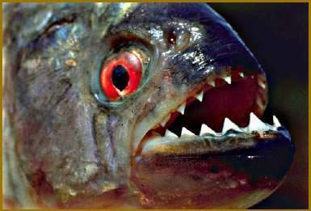

La piraña es un pez de agua dulce conocido por sus dientes afilados y su poderosa mordida. Vive principalmente en ríos de América del Sur.
Las pirañas viven en ríos, lagos y lagunas de Sudamérica, especialmente en la cuenca del Amazonas.
Se alimentan de peces, insectos y otros animales pequeños.